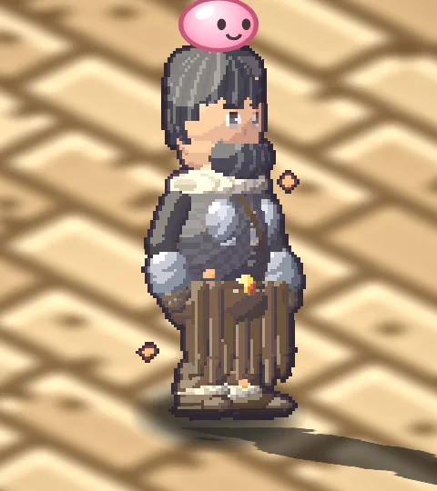

Dano corpo a corpo
Espadachim
Aço, fúria e muita vida
Mestre da espada e do machado. Alto dano e muita vida, pouca mana. É a única linhagem que doma o Dragão de Guerra e cavalga com +40% de velocidade.
Atributos iniciais
FOR8
AGI5
VIT6
INT1
DES4
SOR3
Vida ×1,2Mana ×0,7
Armas: Machado, Espada
Habilidades de destaque 42 no total
- Golpe RúnicoGolpe forte em arco à frente.
- Redemoinho de UlfhednarGira a lâmina atingindo todos ao redor.
- Machado MeteoroMachado gigante cai do céu.
- Trovão de ThorRaio que salta por até 5 alvos.
- Lâmina do RagnarökCorte devastador em arco enorme.
- Impacto de TyrHabilidade suprema: o machado de Tyr racha o chão e esmaga todos ao redor.
Evolução
- InícioAprendiz
- Classe 10Espadachim
- Classe 50Cavaleiro de Midgard
- RenascerCavaleiro Renascido
- Classe 10 renasc.Lorde Cavaleiro
- Classe 50 renasc.Cavaleiro Transcendente
Caminhos de especialização
UlfhednarFúria lupina: +10% de ataque e ataque mágico.
Jarl da GuerraLíder de batalha: +20% de vida e +10% de mana.